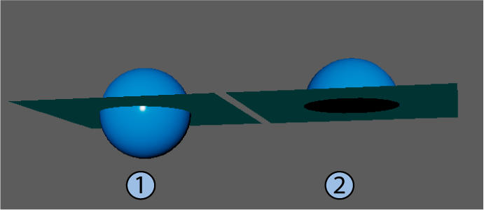

“布尔堆栈”(Boolean stack)和“布尔运算”(Boolean Operation)选项包括“交集类别”(Intersection Classification)设置，该设置允许您在使用开放输入网格（平面或带洞的网格）时控制布尔运算的结果。
系统会对交集执行布尔操作。使用开放网格时，Maya 可以采用不同的方式计算选定网格的交集：
- 自动(Auto)：当选定网格包含一个开放网格和一个闭合网格时，将“交集类别”(Intersection Classification)设置为“边”(Edge)
- 边(Edge)：将开放网格视为闭合体积。
- 法线(Normal)：将开放网格视为开放体积。
下图说明了“边”(Edge)和“法线”(Normal)设置之间的差异。在每个示例中，使用不同的布尔运算组合平面和球体。
注： 当在“布尔运算”(Boolean Operation)选项中设置“交集类别”(Intersection Classification)时，它将全局应用于场景中的所有布尔节点。布尔堆栈中的设置允许您在节点级别选择默认值，从而替代在“布尔运算”(Boolean Operation)选项中设置的任何默认值。
并集(Union)

并集的交集类别：边 (1) 和法线 (2)
差集(A-B)(Difference (A-B))
差集 (A-B) 的交集类别：边 (1) 和法线 (2)
差集(B-A)(Difference (B-A))
差集 (B-A) 的交集类别：边 (1) 和法线 (2)
交集(Intersection)
交集的交集类别：边 (1) 和法线 (2)
切片(Slice)
切片的交集类别：边 (1) 和法线 (2)
打洞(Hole Punch)
打洞的交集类别：边 (1) 和法线 (2)
剪辑镜头出点(Cut Out)
裁切的交集类别：边 (1) 和法线 (2)
分割边(Split Edges)

分割边的交集类别：边 (1) 和法线 (2)